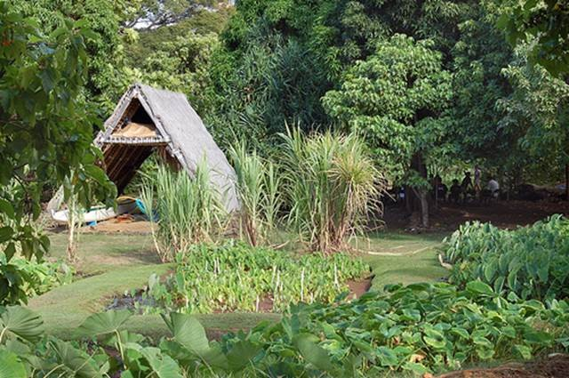
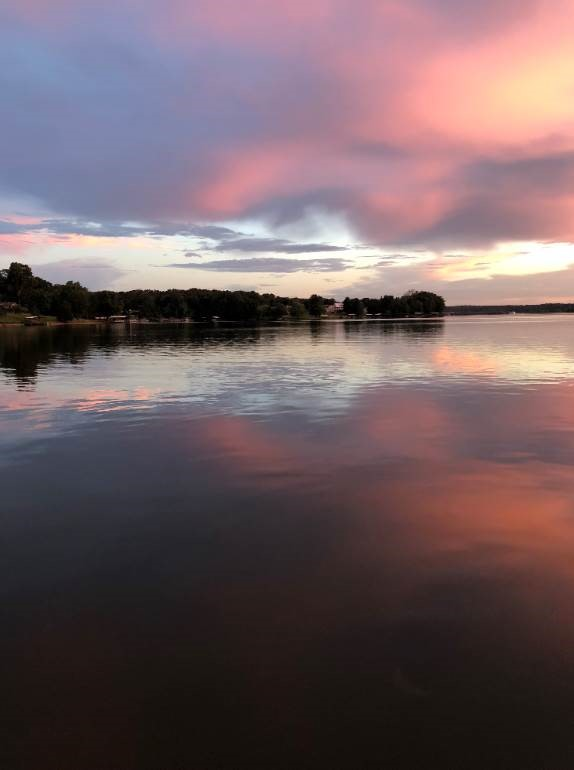

This page tells you stories of adventurs at Lo'i Patch and at Barkley Lake!
For the past few summers, I’ve been going to a camp at Kamehameha Schools for Hawaiian kids that aren’t students there (this will be the first year in a long time that I’m not going). They teach us all about our heritage and culture while taking us on trips almost every day for a week. One of my favorite activities was going to the lo’i kalo, which are basically big taro farms. A lot of people don’t know about how these plants are grown, but we get to walk up through the mountain along the natural river that is the water source for these patches. We learned all about the different segments of the process and how our ancestors managed to create a system where water could be used from the top of the mountain, through the farm, and back down so lower farms could utilize it as well. And finally, we would get to step into the thick mud plots and plant kalo, as well as pull out the weeds.
I go to my dad’s hometown in Indiana almost every summer, and we always drive down to my grandparents’ second house in Kentucky. There, we go fishing and swimming out on the lake and rent jet skis. It’s always so fun because it’s a huge lake with normally few people on it and there are secret areas where you can dive off cliffs and go tubing.
